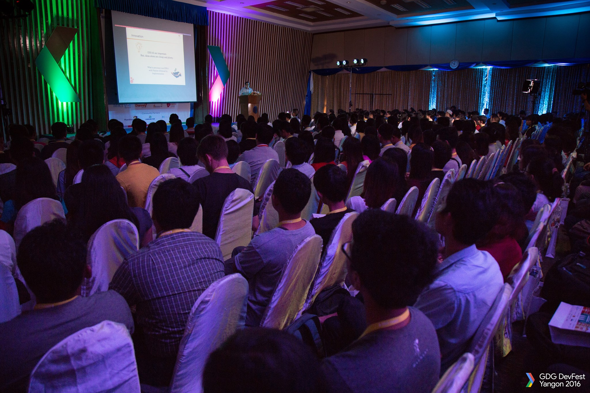
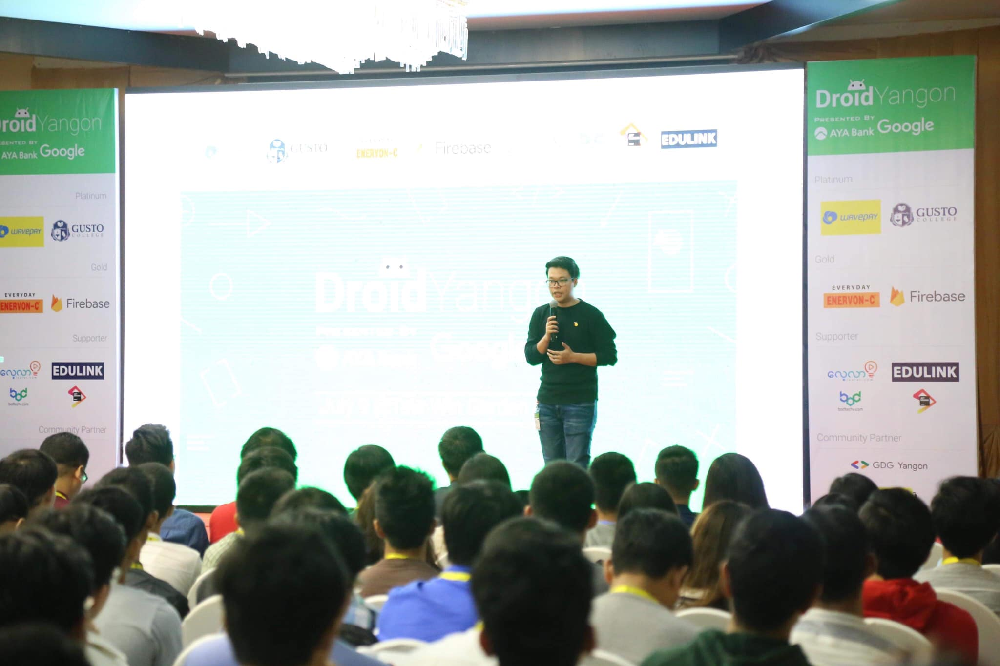
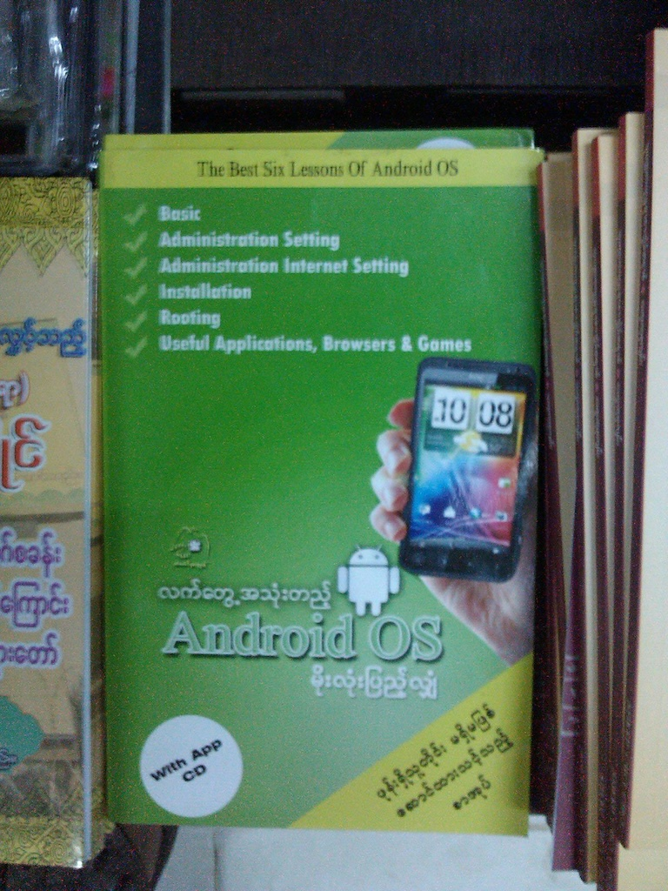
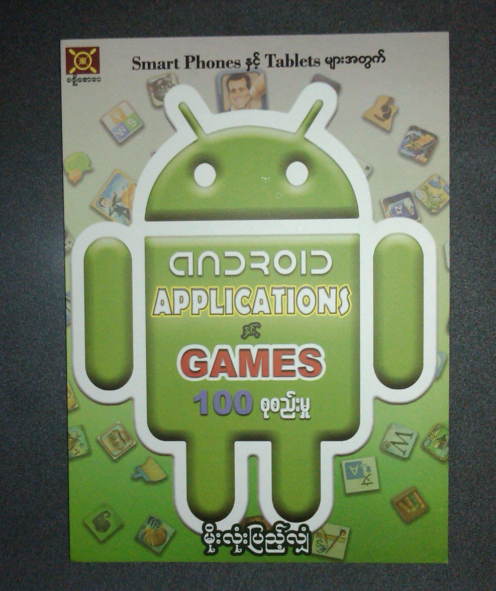

Co-founded Myanmar's premier online education platform. Organized several large-scale events including Google DevFest, Harvard CS50 Study Group and Android Study Jams in Yangon, Myanmar.
Reputed for proactive attitude, exceptional communication skills, self-taught proficiency, and hard-working nature.
Committed to continuous learning and exploration of new technologies, with hands-on experience in delivering mobile and web applications.
I am pursing BSc degree in Computer Science at University of London.
I've taken these modules in University. Introduction to Programming, Discrete Maths, Introduction to Programming II, Web Development, Computation Mathematics, Algorithms and Data Structures I, Fundamentals of Computer Science, Object Oriented Programming, Graphics Programming, Databases and Networks and the Web, Software Design and Development, Agile Software Projects, Programming with Data, Computer Security
Web Development Module Project
This e-magazine website is dedicated for EV news and reviews. I used grid and flex layouts to make this website. Handlebarsjs is new to me. I tried to implement after I wrote HTML & CSS. I successfully refactored the previous highlight news session on main page. Although I implemented web accessibility, I would add other accessibility features if I have another time. EV Magazine Project | Source Code
Game Project
Below is my first game assignment using basic programming techniques. I used the P5.js library to create this small game.
I have been involved in and initiated various local and international developer communities. Here are a few of them.
Google Developer Group YangonOrganized community-led local developer meetups to explore various Google Developer Technologies. Invited technical engineers and speakers from leading companies such as Google, Agoda, and Mozilla to share their expertise with the local developer community. Provided support and resources to over 1000 local developers through the GDG Yangon initiative. 
DroidYangon
Hosted the inaugural Android-focused conference in Myanmar,
attracting over 300 developers and students with the support of
Google, Firebase team, and local community partners. The
conference was a resounding success.

I wrote my first book at the age of 16 (2012). This technology guide book was the best seller in Myanmar. Before publishing my first book, I wrote a few articles in well-known IT journals such as Internet Journal, NetGuide under my author name called Moe Lone Pyae Shan.
 So far, I have written two best-selling Android User Guide books in Burmese.
Thank you for reading to the end.